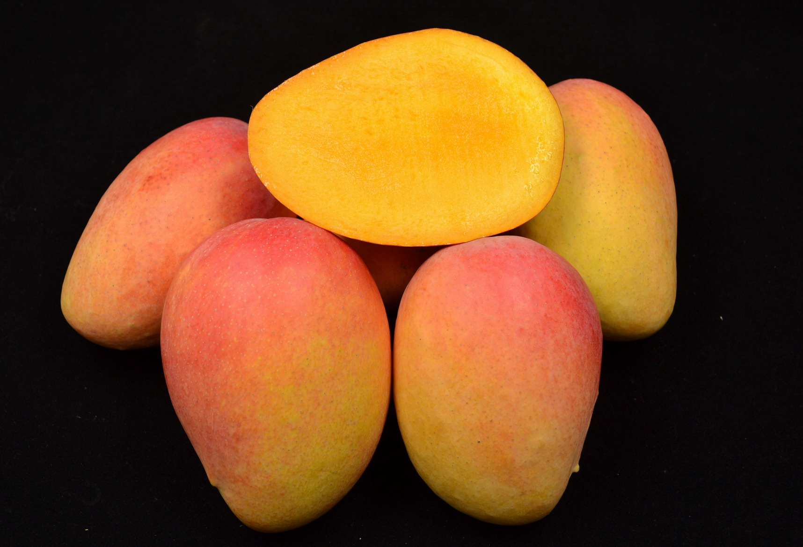
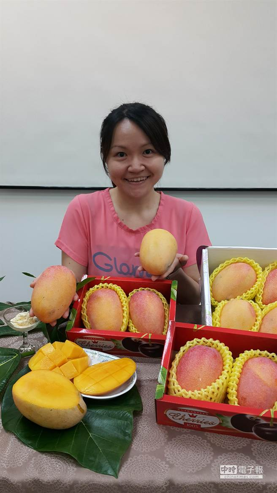

🥭 臺灣芒果專業圖鑑
臺北農產運銷公司內部培訓自主學習資料
24 品種完整收錄 · 依農業部農業知識入口網正式分類
芒果（Mangifera indica L.）為漆樹科常綠喬木，原產於印度及中南半島，已有超過 4,000 年栽培歷史。臺灣芒果最早於 17 世紀荷蘭統治時期引進，種植於臺南六甲一帶，經 400 年馴化形成今日的「土芒果」（在來種），是臺灣所有芒果品種的根基。
目前全臺芒果栽培面積約 16,000 公頃，年產約 15 萬公噸，產值逾 80 億元。產地高度集中於南部三縣市（臺南、屏東、高雄），每 10 顆芒果就有 9 顆來自這三個縣市。其中愛文品種佔市場約 5 成以上，是臺灣最具代表性的芒果品種。


左：愛文芒果果實 ｜ 右：金煌芒果果實（圖：農業部農業知識入口網）
臺灣芒果品種的演進，與殖民、戰爭及全球化緊密相連，歷經四大階段：
荷蘭人最早將芒果引入臺灣，種植於臺南六甲及附近鄉鎮。經 400 年馴化，形成以「柴檨」為主的土芒果族群（含香檨、肉檨、牛犀等），成為現今所有芒果嫁接的根砧基礎。
日本以臺灣為南進基地，從印尼、印度等地大量引進「南洋種」芒果，品種多達 30 餘種，是歷史上引進最多外來種源的時代。現今仍存的有黑香（烏香）、懷特、卓安南等。
農復會自美國佛羅里達州引進愛文、凱特、海頓、聖心等品種，開啟現代化大規模種植。其中愛文成為今日臺灣芒果的代名詞，佔有率超過 5 成。
官方與民間不斷培育新品種。高雄六龜果農黃金煌育出金煌，帶動雜交育種風潮；官方陸續推出臺農一號、夏雪（高雄 3 號）、蜜雪（高雄 4 號）、臺中一號等，臺灣已成為全球芒果品種多樣性最高的地區之一——種原庫保有 130 種，市面上可購得超過 20 種。
國產芒果產地極度集中於南部，全臺種植面積約 16,000 公頃，南部三縣市佔比超過 90%：
| 排名 | 縣市 | 栽培面積（約） | 佔比 | 主要鄉鎮 |
|---|---|---|---|---|
| 1 | 臺南市 | 約 6,800–7,300 公頃 | 42–45% | 玉井、南化、楠西、官田、大內 |
| 2 | 屏東縣 | 約 5,800 公頃 | 35–38% | 枋山、枋寮、春日、獅子 |
| 3 | 高雄市 | 約 1,500–1,900 公頃 | 10–12% | 六龜、桃源、甲仙 |
| 4 | 臺東縣 | 較少量 | — | 東河、太麻里 |
| 全台合計 | 約 16,000 公頃 | 100% | 年產量約 15 萬公噸 | |
| 品種 | 市佔率（約） | 定位 | 產期 |
|---|---|---|---|
| 愛文 | 50–55% | 主力品種，內外銷主力 | 5–7 月 |
| 金煌 | 20–25% | 第二大品種，怕酸族群最愛 | 5–7 月 |
| 凱特 | 約 8–10% | 最晚熟，填補市場空窗 | 8–10 月 |
| 土芒果 | 約 5–8% | 傳統風味，情人果加工 | 5–6 月 |
| 玉文六號 | 3–5% | 大果型紅皮新寵 | 5–7 月 |
| 其他品種 | 5–10% | 夏雪、蜜雪、黑香、金蜜等特色品種 | 5–10 月 |
依引進來源與育成背景，將臺灣芒果分為五大類：

400 年馴化 · 濃郁芒果香
土芒果（柴檨）
1954 年引進 · 現代化主力
愛文 · 凱特 · 海頓 · 聖心
日治時期引入 · 異國風味
黑香 · 懷特 · 卓安南
農改場/農試所育成
夏雪 · 蜜雪 · 臺農一號 · 臺中一號
農民自主選育 · 百花齊放
金煌 · 玉文 · 紅龍 · 金蜜 等

左：土芒果果實 ｜ 右：左為愛文、右為土芒果對比（圖：農業部）
| 項目 | 特徵 |
|---|---|
| 歷史 | 荷蘭統治時期（17 世紀）引進，經 400 年馴化，含香檨、柴檨、肉檨、牛檨等品系，以柴檨栽培最廣 |
| 植株 | 植株高大可達 10 公尺以上，壽命可逾百年，耐旱耐病蟲害，常用作行道樹 |
| 果實 | 體型最小（約 120g），是臺灣商業品種中最小者；種子大（佔果重 23%），果肉率不高，纖維較粗 |
| 風味 | 具有最濃郁的芒果香氣，是許多人懷念的童年滋味 |
| 糖度 | 14.9 °Brix，酸度 0.23%，糖酸比 64 |
| 產期 | 早熟，5–6 月；屏東因緯度最低，產期最早 |
| 產地 | 臺灣各地均有，以屏東縣佔約 65% 為最大產區 |
| 加工 | 幼果可製情人果，成熟果可製蜜餞、芒果乾、冰沙、芒果汁等 |
| 產業地位 | 所有其他芒果品種嫁接繁殖的根砧基礎，無土芒果即無臺灣芒果產業 |

愛文芒果：原生於美國佛羅里達州，1954 年引進臺灣，現為國內最大宗品種（圖：農業部）
| 項目 | 特徵 |
|---|---|
| 產地 | 屏東枋山（4 月下旬起）、臺南玉井/南化（接棒至 7 月下旬） |
| 果實 | 紅皮色澤鮮豔，皮薄肉細，果重約 320–500g |
| 風味 | 味香多汁，酸甜有層次，纖維中等 |
| 糖度 | 12–15 °Brix，酸度 0.21%，糖酸比約 57 |
| 種子 | 約佔果重 7.3% |
| 植株 | 可高達 4 公尺，建議矮化至 2.5 公尺以下以利管理 |
| 產期 | 5–7 月 |
| 市場 | 內外銷主力，產量穩定、不易隔年結果，紅皮討喜 |
| 缺點 | ⚠️ 極不耐炭疽病，採後櫥架壽命短，易產生黑點病斑降低商品價值。果皮出現黑點表示成熟度已足，應盡快食用 |


凱特芒果：最晚熟品種（8–10 月），俗稱「九月檨」（圖：農業部）
| 項目 | 特徵 |
|---|---|
| 產期 | 8–10 月，臺灣最晚熟的品種，盛產期在 9 月，俗稱「九月檨」 |
| 果實 | 卵型稍扁，平均果重 750g（比愛文大），催熟後果皮可轉黃色 |
| 風味 | 酸度較高（0.5–0.9%），成熟軟化後降至約 0.25%；酸甜感強烈 |
| 糖度 | 13–18 °Brix |
| 栽培 | 耐病蟲害能力強，用藥需求較少；多使用黑色牛皮紙袋套袋促進轉色 |
| 風險 | ⚠️ 果實過大（>900g）或過晚採收，果肉生理劣變風險增加；產季易受颱風危害 |

球型略長，果肉橙黃色，肉質稍粗略有纖維
糖度 15.4 °Brix · 香氣濃郁 · 「懷舊風味」
美國引進 早生品種
炭疽病耐受性優於愛文，但對低溫敏感使結果不穩定，栽培面積極少

紅皮 · 果肉橙黃色 · 纖維中等 · 香味濃
中晚熟品種，產期在愛文之後
美國引進 有隔年結果
品質與售價不如愛文，大小年明顯收益不穩定，栽培面積極少

黑香芒果：綠皮品種，具獨特龍眼風味，成熟後果皮仍為濃綠色（圖：農業部）
| 項目 | 特徵 |
|---|---|
| 來源 | 約 1910 年代從印尼引進 |
| 最大特色 | 果肉帶龍眼風味，香氣特殊濃郁；成熟後果皮仍為濃綠色，不會轉色，為臺灣少見的綠皮品種 |
| 果實 | 平均果重 460g，果肉深黃色，纖維中等 |
| 糖度 | 15.6 °Brix，酸度 0.18%，糖酸比 87 |
| 產期 | 約 7 月，中生品種 |
| 採收 | 難以從果皮色澤判斷成熟度，建議以花後天數及試催熟判斷 |
| 現況 | 栽培面積少且零星，主要分布於臺南芒果產區，部分消費者視為逸品 |


懷特芒果：1916 年從印度引進，果型細長如香蕉（圖：農業部）
| 項目 | 特徵 |
|---|---|
| 來源 | 1916 年日治時代由日本三井物產會社從印度引進 |
| 別名 | 香蕉檨（果型長如香蕉）、竹葉檨、白檨（果肉淺黃偏白） |
| 果肉 | 淺黃偏白色，Q 軟特殊、細緻、香甜 |
| 育種價值 | 金煌芒果的親本！金煌的果型長、果肉細緻、種子扁薄等優良特性，均遺傳自懷特 |
| 注意事項 | ⚠️ 對撲克拉錳藥劑敏感，易產生藥害，應避免使用 |
| 現況 | 栽培面積極少，主要作為育種材料 |

自泰國引入，泰文意為「好運無限」
具有不時花特性，一年最多可採收兩次
黃皮 · 果重約 380g · 纖維纖細
糖度 16 °Brix · 酸度 0.16% · 糖酸比 87
四季結果 泰國引進
花期集中在 1–3 月及 6–8 月，需注意留果管理避免隔年結果

夏雪芒果：2008 年高雄區農業改良場育成，號稱「芒果界 LV」，具土芒果香氣（圖：農業部）
| 項目 | 特徵 |
|---|---|
| 育成 | 2008 年高雄區農業改良場育成 |
| 風味 | 具有土芒果風味，香味濃郁 |
| 果實 | 黃熟時果皮為黃色，果重約 400–550g，果肉率 75–80% |
| 糖度 | 12–15 °Brix |
| 產期 | 5 月至 7 月上旬 |
| 栽培 | 生長勢中等，樹形半開張；為東部地區新興果園常選種的品種 |
| 市場定位 | 號稱「芒果界 LV」，精品路線 |
芒果高雄4號─蜜雪由高雄區農業改良場李雪如助理研究員選育，係從開放雜交授粉的愛文芒果後裔中選出。歷經 12 年育種，民國 102 年取得 25 年植物品種權（證書 A01468，2013.5.3–2038.5.2）。

蜜雪果實：果皮呈亮麗桃紅色、果肉橙黃，果形圓潤（圖：高雄區農業改良場）
| 項目 | 特徵 |
|---|---|
| 育成 | 高雄區農業改良場李雪如；愛文開放雜交後裔中選出（KMI90056 品系） |
| 植株 | 生長勢中等，樹形半開張，枝梢平展生長 |
| 葉片 | 橢圓至長橢圓，葉長約 23.5cm；葉身扭轉、葉緣波浪為辨識特徵 |
| 花序 | 圓錐狀聚繖型，長 45–55cm，花梗紅色 |
| 果實 | 卵形，果蒂微凹；中果型 300–485g；幼果綠帶紅，黃熟果黃帶桃紅色，轉色較愛文快且均勻 |
| 果肉 | 橙黃色，細緻、少纖維 |
| 糖度 | 15–18 °Brix（試驗均值 16.5–16.6 °Brix，顯著高於愛文 14.0–15.3 °Brix） |
| 酸度 | 0.09–0.16%，屬高糖低酸型 |
| 果肉率 | 70–83%（隨產季與留果量變動） |
| 櫥架壽命 | 室溫 6–8 天；採後 12 天炭疽病發生率僅 25%（愛文同期 100%） |
| 產期 | 屏東 6 月上旬至 7 月中旬（謝花後 120–130 天採收） |
| 開花期 | 屏東 1 月中旬至 3 月上旬；花期適逢寒流，需飼養麗蠅輔助授粉 |
| 調查日期 | 品種 | 果重(g) | 果肉率(%) | 糖度(°Brix) | 酸度(%) |
|---|---|---|---|---|---|
| 99 年 6 月中旬 | 蜜雪 | 485.4 | 82.7 | 16.5 | 0.16 |
| 愛文（對照） | 417.5 | 84.7 | 14.0 | 0.18 | |
| 100 年 7 月上旬 | 蜜雪 | 346.4 | 74.6 | 16.6 | 0.09 |
| 愛文（對照） | 348.3 | 79.6 | 15.3 | 0.09 |


臺農一號：早生矮化品種，1985 年農試所鳳山分所育成（圖：農業部）
| 項目 | 特徵 |
|---|---|
| 育成 | 1985 年農試所鳳山熱帶園藝試驗分所 |
| 植株 | 早生矮化品種，葉片略呈波浪狀，便於管理採收 |
| 果實 | 扁卵形，果重約 200g，向陽面呈淡紅色，催熟後金黃色美觀 |
| 糖度 | 16–19 °Brix，香味濃郁，果肉稍硬 |
| 優勢 | 抗炭疽病、耐運輸貯藏、可樹上掛黃採收 |
| 缺點 | 單位面積產量較低，經濟效益較差，影響農民栽種意願 |
| 種子 | 約佔果肉 12% |
芒果「臺中1號」由國立中興大學謝慶昌副教授與臺中區農業改良場共同選育，自金煌芒果的實生後代選拔而得。自民國 88 年起耗費 15 年育成，於民國 103 年（2014 年）取得植物品種權。

臺中一號：果皮色澤黃帶紅，光照充足可完全轉紅，糖度可達 21°Brix（圖：臺中區農業改良場 / 中時新聞網）
| 項目 | 特徵 |
|---|---|
| 育成 | 國立中興大學謝慶昌 × 臺中區農業改良場；金煌實生後代選拔，15 年育成 |
| 植株 | 生長勢強，樹形半開張；枝梢長、枝條較柔軟（需高分枝管理） |
| 葉片 | 嫩葉深紅褐色，成熟葉濃綠色；葉形長橢圓至披針形，葉緣波浪狀 |
| 花序 | 頂生圓錐狀，長約 45cm，粉紅色；初花期較愛文與金煌晚；兩性花比率約 65%，結果率佳 |
| 果實 | 橢圓形，果重約 600g，基部有突起花柱痕跡；幼果綠帶紅，黃熟果黃帶紅（光照充足可完全轉紅） |
| 果肉 | 黃色，質地緊實，纖維量少，剝皮容易；果肉率約 87% |
| 糖度 | 19–21 °Brix，酸度 0.2–0.3% |
| 產期 | 7 月中旬至 8 月上旬（彰化地區）；盛花後至採收約 136 日 |
| 最大亮點 | 可在欉紅採收——自然黃熟果無爛心等生理劣變問題（與金煌根本性差異） |
| 第二特色 | 可採收綠熟果催熟，糖度仍達 20 °Brix；有利運輸販售與市場開拓 |
| 櫥架壽命 | 室溫約 5–7 天 |
臺灣農民的育種熱情舉世聞名，以金煌為首的民間育成品種百花齊放，帶動了整個芒果產業的多元化發展。
金煌芒果：高雄六龜果農黃金煌以懷特×凱特雜交育成（圖：農業部）
| 項目 | 特徵 |
|---|---|
| 育成 | 高雄六龜果農黃金煌先生以懷特為母本、凱特為父本雜交育成 |
| 果實 | 果實碩大呈長形如象牙，催熟後果皮呈金黃色，果重 0.6–2.0 kg |
| 風味 | 肉質細嫩幾乎無纖維，軟熟後幾乎不帶酸味，適合怕酸或牙口較差消費者 |
| 糖度 | 12–17 °Brix，酸度僅 0.24%，糖酸比約 70 |
| 種子 | 種子極扁且薄，僅佔果重 7% |
| 產期 | 5–7 月 |
| 採收 | 不可採收在欉黃（易果肉生理劣變），應採收 7–8 分熟硬熟果後催熟 |
| 優勢 | 抗病性強，栽培管理較愛文粗放，噴藥次數較少 |


玉文六號：臺南玉井果農郭文忠以金煌×愛文育成（圖：農業部）
| 項目 | 特徵 |
|---|---|
| 育成 | 1995 年臺南玉井果農郭文忠以金煌（母本）×愛文（父本）選育 |
| 命名 | 取自產地「玉井」與育種者「郭文忠」名字的首字 |
| 果實 | 遺傳金煌的果實碩大（650–1,000g），種子僅佔果重 6%；承繼愛文的紅皮與好滋味，果肉及纖維細緻 |
| 糖度 | 15.1 °Brix，酸度 0.16%，糖酸比 94 |
| 優勢 | 炭疽病耐受性優於愛文 |
| 缺點 | 花期較不耐低溫，著果率較低 |

約 1976 年高雄荖濃果農發現，又稱水蜜桃芒果
熟成蒂頭帶淡淡水蜜桃香氣，纖維細緻 Q 彈
果重約 460g · 糖度 17.3 °Brix
蜜奶香 紅皮
對撲克拉藥劑敏感，栽培面積稀少

約 1981 年嘉義張銘顯育成，曾獲美國匹茲堡等六個國際大獎
果皮紅色鮮豔，具四季結果特性
不時花 紅皮
利用不時花特性生產 11 月至翌年 3 月果實最受歡迎、價格高，但小果採收極為費工

引進者張金泉命名，因甜度高達 21.3 °Brix 而得名
果肉細緻無絲、飽滿多汁，具蜂蜜般蜜香及土芒果香氣
果重約 300g · 糖酸比高達 118
高糖度 金黃皮
主要種植於彰化縣，埔心鄉以「三蜜之鄉」行銷

1996 年高雄六龜果農在果園實生苗中無意發現
產季比愛文晚一個月，又稱曼文、晚文
果重約 450g · 糖度 13 °Brix · 酸度 0.13%
紅皮 風味較愛文淡
比愛文耐炭疽病，種植於玉井、南化、楠西等海拔稍高地區

1991 年高雄杉林果農林慶瑩發現並命名
紅皮 · 果型圓略扁 · 柱頭痕跡凸起為明顯特徵
果重約 670g · 糖度 16.2 °Brix · 糖酸比 90
紅皮 香氣濃郁
⚠️ 部分園區栽培有生理劣變問題，栽培面積不多

1976 年臺南玉井溫姓果農發現並命名
金黃皮 · 甜度高（16–20 °Brix）· 纖維細 · 香味濃
果重約 400g
金黃皮 耐病性強
中晚生品種，過晚採收會出現生理劣變

1996 年臺南南化果農侯金興以凱特為母本育成
紅皮色澤豔麗，果重平均 1,300g
果肉細緻 · 纖維細 · 較少生理劣變
紅皮 超大型果
糖度 14.4 °Brix · 建議採 7–8 分熟催熟

由貴妃芒果嫁接土芒果培育而成
果型瘦長，皮薄肉細如西施肌膚而得名
風味較愛文溫潤 · 產期 7–8 月
皮薄肉細 軟枝芒果
枝幹易遭強風吹折，需注意防颱
| 品種 | 來源 | 果重(g) | 糖度 | 特色 | 現況 |
|---|---|---|---|---|---|
| 文心 | 1997 年臺南玉井發現 | 500–600 | — | 紅皮圓型、中晚生 | 零星栽培 |
| 金文 | 1999 年臺南南化發現 | 1,134 | 12° | 紅皮、果實碩大、酸度偏高 | 面積極少 |
| 紅凱特 | 1986 年臺南玉井發現 | 1,342 | 12° | 果實巨大、酸度高、纖維粗 | 趣味栽培 |
| 貴妃 | 民間育種 | — | — | 深受消費者喜愛 | 少量栽培 |
| 品種 | 分類 | 果皮色 | 果重(g) | 糖度(°Brix) | 產期 | 核心特色 |
|---|---|---|---|---|---|---|
| 土芒果 | 在來種 | 綠→淡黃 | 120 | 14.9 | 5–6 月 | 最濃芒果香·情人果·根砧基礎 |
| 愛文 | 美國引進 | 紅色 | 320–500 | 12–15 | 5–7 月 | 主力品種·外銷主力·酸甜均衡 |
| 金煌 | 民間育成 | 金黃色 | 600–2,000 | 12–17 | 5–7 月 | 幾無纖維·不酸·抗病性強 |
| 凱特 | 美國引進 | 黃色 | 750 | 13–18 | 8–10 月 | 最晚熟·九月檨·酸甜感強 |
| 玉文六號 | 民間育成 | 紅色 | 650–1,000 | 15.1 | 5–7 月 | 大果+紅皮+耐炭疽病 |
| 夏雪 | 官方育成 | 黃色 | 400–550 | 12–15 | 5–7 月 | 土芒果香·LV級精品 |
| 蜜雪 | 官方育成 | 桃紅色 | 300–485 | 15–18 | 6–7 月 | 愛馬仕級·耐儲藏·櫥架壽命長·高糖低酸 |
| 臺中一號 | 官方育成 | 黃帶紅 | 600 | 19–21 | 7 中–8 上 | 可安心在欉紅·無爛心問題·果肉率87% |
| 紅龍 | 民間育成 | 紅色 | 460 | 17.3 | 6–7 月 | 水蜜桃香·Q彈口感 |
| 黑香 | 南洋引進 | 濃綠 | 460 | 15.6 | 7 月 | 龍眼風味·綠皮不轉色 |
| 金蜜 | 民間育成 | 金黃色 | 300 | 21.3 | 7 月 | 極甜·蜜香·彰化特產 |
| 農民黨一號 | 民間育成 | 紅色 | 400–450 | 13.8 | 四季 | 不時花·國際大獎 |
| 臺農一號 | 官方育成 | 金黃色 | 200 | 16–19 | 5–7 月 | 矮化·高糖·耐儲運 |
| 海頓 | 美國引進 | 紅色 | 350 | 15.4 | 6–7 月 | 懷舊風味·低溫敏感 |
| 懷特 | 南洋引進 | — | — | — | — | 金煌親本·香蕉形果 |
| 口感偏好 | 推薦品種 | 說明 |
|---|---|---|
| 🍬怕酸一族 | 金煌、金蜜、臺中一號 | 酸度極低，金煌酸度僅 0.24%，幾乎不酸；金蜜糖高達 21°Brix |
| 🍋酸甜均衡派 | 愛文 | 甜酸比例適中（糖酸比 57），層次分明，經典不敗 |
| 💪大口吃肉派 | 金煌、玉文、金興 | 果實大、種子薄、果肉率高 |
| 🌿香氣至上派 | 土芒果、夏雪、黑香 | 土芒果香氣最濃、夏雪土芒果風味、黑香龍眼香 |
| 🧊耐放實惠派 | 凱特、臺農一號 | 凱特耐病蟲害藥少、臺農一號耐貯運 |
| 抗病等級 | 品種 | 說明 |
|---|---|---|
| 強 | 土芒果、金煌、金興、臺農一號 | 耐病蟲害能力佳，管理較粗放 |
| 中 | 玉文六號、凱特、黑香、夏雪 | 耐受性優於愛文，但仍需注意 |
| 弱 | 愛文 | 極不耐炭疽病，採後黑點影響商品價值，需重視藥劑防治與套袋管理 |
| 品種類型 | 採收方式 | 後熟處理 | 代表品種 |
|---|---|---|---|
| 在欉黃型 | 可樹上完熟採收 | 採後可直接食用 | 土芒果、臺農一號、愛文（部分） |
| 硬熟催熟型 | 7–8 分熟硬熟果採收 | 需催熟處理後再出售 | 金煌、玉文、金興 |
| 混合型 | 依市場需求調整 | 可催熟亦可樹上完熟 | 愛文、凱特 |
以下為本圖鑑收錄品種與臺北農產運銷公司果菜品名代碼對照：
| 北農代碼 | 北農品名 | 對應圖鑑品種 |
|---|---|---|
| R1 | 愛文 | 愛文 Irwin（主力品種） |
| R2 | 玉文 | 玉文六號 |
| R3 | 本島 | 土芒果（柴檨） |
| R31 | 夏雪 | 高雄3號—夏雪 |
| R4 | 凱特 | 凱特 Keitt |
| R5 | 黑香、金興 | 黑香（烏香）、金興 |
| R6 | 金煌 | 金煌（第二大品種） |
| R7 | 聖心 | 聖心 Sensation |
| R8 | 芒果青 | —（加工用青芒果，非特定品種） |
| R10 | 西施 | 西施芒果 |
| R0 | 其他、土改、台一、紅龍 | 海頓、懷特、卓安南、蜜雪、臺農一號、臺中一號、紅龍、農民黨一號、金蜜、慢愛文、杉林一號、玉林、文心、金文、紅凱特、貴妃 |
※ R0「其他」涵蓋多個民間育成品種與少量栽培品種，實務交易時以「其他芒果」統稱。
主要參考資料（農業部農業知識入口網 — 芒果主題館）：
所有品種照片與資料均引用自農業部農業知識入口網芒果主題館（kmweb.moa.gov.tw），圖片版權歸原機關所有。
產業與品種補充來源：